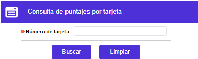
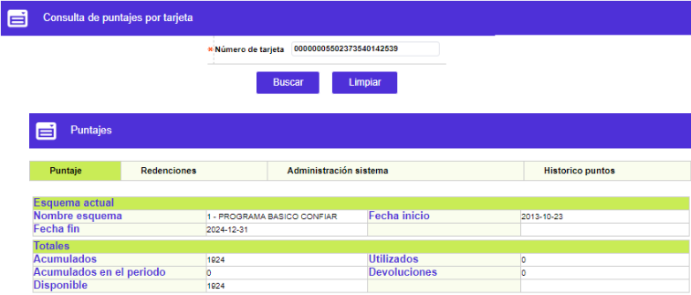
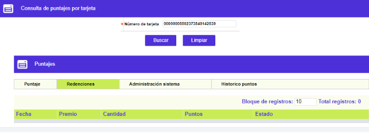
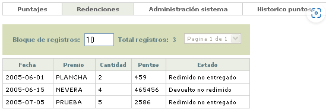
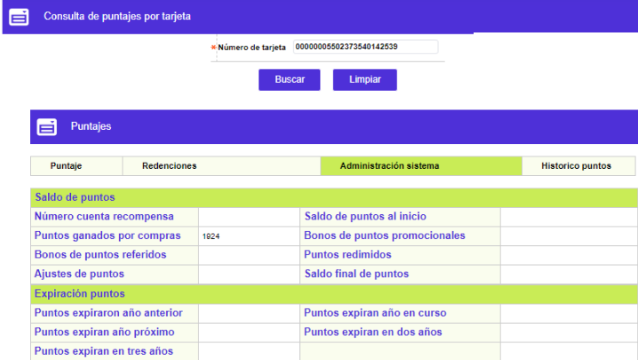
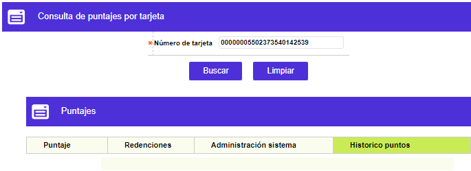
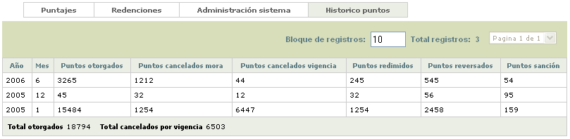

Puntajes por Tarjeta
Al invocar este formulario ingresa en modo consulta, debiéndose digitar el número de la tarjeta para la que se requiere conocer el estatus de los puntos obtenidos y redimidos:

El formulario dispone de los enlaces: Puntajes,Redenciones, Administración sistema e Histórico, desde los cuales se invocan los formularios en los cuales se encuentra agrupada la información de puntajes correspondiente.

Descripción de campos
|
Nombre esquema |
Campo que muestra el nombre del esquema al que se encuentra asociado la tarjeta. |
|
Fecha inicio |
Este campo despliega en formato YYYY-MM-DD, la fecha desde la cual aplica o tiene vigencia el esquema al que pertenece la tarjeta. |
|
Fecha fin |
Campo en formato YYYY-MM-DD, contiene la fecha hasta la que tiene vigencia el esquema al que pertenece la tarjeta. |
|
Acumulados |
Este campo señala la cantidad de puntos acumulados por la tarjeta, desde el inicio de la vigencia del esquema y de acuerdo con las condiciones del mismo. |
|
Acumulados en el periodo |
Campo en el que se muestra la cantidad de puntos ganados o acumulados por la tarjeta durante el periodo actual. |
|
Utilizados |
Este campo indica la cantidad de puntos que sido utilizados por el tarjetahabiente para redimir premios. |
|
Devoluciones |
Campo que contiene la cantidad de puntos que le fueron reintegrados a la tarjeta por procesos de ajustes. |
|
Disponible |
En este campo se indica el total de puntos que la tarjeta tiene disponible a la fecha, para ser utilizados por el titular de la misma. |
Redenciones: Al invocar ese enlace, se despliega un formulario con el detalle de las utilizaciones de puntos que el tarjetahabiente ha efectuado para obtener los premios ofrecidos por la entidad.


Descripción de campos
|
Fecha |
Este campo indica en formato YYYY-MM-DD la fecha en la cual se hizo efectiva la redención de puntos por parte del titular de la tarjeta. |
|
Premio |
Campo que señala el premio que fue reclamado o redimido por el tarjetahabiente con los puntos acumulados en la tarjeta.la tarjeta. |
|
Cantidad |
Este campo contiene la cantidad de unidades de la misma mercancía o premio que el tarjetahabiente reclamó o redimió. |
|
Puntos |
Campo que contiene la cantidad de puntos utilizados por el tarjetahabiente para la redención de la cantidad de unidades del premio correspondiente. |
|
Estado |
En este campo se indica según corresponda, el estado actual en que se encuentra la redención del premio y que puede ser: Redimido entregado o Devuelto no redimido. |
Administración sistema: Al invocar este enlace, se despliega un formulario estructurado en dos bloques de datos, y que muestra tanto el resumen de los puntos generados como el de los puntos vencidos o por vencer, en el caso de no ser utilizados oportunamente por el tarjetahabiente.

Descripción de campos
|
Número cuenta recompensa |
Este campo de uso exclusivo para el producto Platinum e Infinity, contiene el número adicional, incluido en la tarjeta, que facilitara la administración de los puntos de manera independiente a los valores monetarios. |
|
Saldo de puntos al inicio |
Campo que señala la cantidad de puntos que la tarjeta tenía al comienzo y que aplica principalmente cuando se hacen migraciones de otros sistemas |
|
Puntos ganados por compras |
En este campo se muestra la cantidad acumulada de puntos que la tarjeta ha obtenido por las compras efectuadas de acuerdo con las condiciones del esquema al que pertenece. |
|
Bonos de puntos promocionales |
Campo que contiene la cantidad de puntos ganados por la tarjeta a través de las promociones definidas para el esquema. |
|
Bonos de puntos referidos |
En este campo se indica la cantidad de puntos que se han generado para la tarjeta por los clientes referidos que el titular de la tarjeta ha presentado a la entidad. |
|
Puntos redimidos |
Campo que despliega la cantidad total de puntos de la tarjeta que el cliente ha utilizado para redimir puntos y/o millas. |
|
Ajuste de puntos |
Indica la cantidad de puntos que han sido reintegrados a la tarjeta por efecto de ajustes, devoluciones de premios, puntos abonados equivocadamente a la tarjeta entre otras posibles causas. |
|
Saldo final de puntos |
En este campo se muestra la cantidad total de puntos de la tarjeta que están disponibles para ser utilizados por el titular. |
|
Puntos expiraron año anterior |
Campo que contiene la cantidad de puntos que vencieron durante el año inmediatamente anterior por no haber sido utilizados o redimidos oportunamente. |
|
Puntos expiran año en curso |
En este campo se muestra la cantidad de puntos próximos a vencer en el año actual en caso que no sean utilizados por el tarjeta habiente, tomando en cuenta para el cálculo la fecha de vigencia del esquema. |
|
Puntos expiran año próximo / en dos años / en tres años |
Campos que señalan respectivamente, la cantidad de puntos que pueden vencerse durante el año siguiente, los dos próximos años o dentro de tres años en caso que el tarjeta habiente no haga uso de ellos. Al igual que en el caso anterior, para el cálculo se toma en cuenta la fecha de vigencia del esquema |
Histórico: Al invocar este enlace, se despliega un formulario con el detalle por año y mes de los puntos obtenidos, redimidos y expirados que la tarjeta ha tenido.


Descripción de campos
|
Año |
Este campo indica el año para el cual se está mostrando, en la misma fila, el histórico de puntos. |
|
Mes |
Campo que contiene el mes al que corresponde la información de histórico de puntos presentada en la misma fila. |
|
Puntos otorgados |
En este campo se muestra el total de los puntos que se le otorgaron a la tarjeta en el mes y año respectivo de acuerdo con las condiciones del esquema al cual pertenece. |
|
Puntos cancelados por mora |
Campo que contiene la cantidad de puntos que le fueron cancelados a la tarjeta durante el mes y año por haber ingresado en estado de mora y de acuerdo con las condiciones del esquema. |
|
Puntos cancelados vigencia |
Este campo muestra la cantidad de puntos que le fueron cancelados a la tarjeta en el mes y año respectivos por haberse vencido o expirado. |
|
Puntos redimidos |
Campo que despliega la cantidad de puntos que el tarjeta habiente redimió o utilizó durante el mes y año indicados. |
|
Puntos reversados |
Indica para el mes y año respectivos la cantidad de puntos que le fueron reversados a la tarjeta bien por ajustes efectuados o por reversión de las transacciones con las cuales se generaron dichos puntos. |
|
Puntos sanción |
En este campo se muestra la cantidad de puntos que le fueron anulados a la tarjeta a manera de sanción en el año y mes indicados, de acuerdo con las condiciones del esquema al que pertenece la misma. |
|
Total otorgados |
Campo que contiene la sumatoria de los puntos otorgados a la tarjeta de acuerdo con las condiciones del esquema asociado a la misma. |
|
Total cancelados por vigencia |
Este campo despliega la sumatoria de los puntos que han expirado o se encuentran vencidos por no haber sido utilizados oportunamente. |